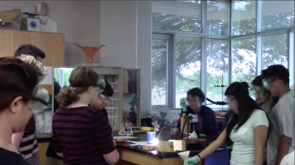

Over the past few years, my outlook on teaching as a career and as a passion have changed dramatically, and this is mostly owed to being in the classroom myself. As you'll see throughout this site, my philosophy deals heavily with hands-on learning and constructivism, with an emphasis on creativity and making in the classroom. If it weren't for my experience in the UTeach program, I might never have been exposed to these ideas, and I am so grateful to have had the opportunity to work in local schools throughout my college education. I have seen first hand the good that using inquiry, making, and constructivism in the classroom; students are engaged, they're interested, and they leave the classroom wanting to know more. As I move into student teaching, and eventually my teaching career, I hope that I have this type of impact on my students; I hope they're curious, I hope they learn to love science and not be intimidated by it, and I hope they become lifelong learners that never stray from a challenge.
Apart from instilling curiosity, my greatest goal for teaching is allowing students to find a purpose in their education. Agency is extremely important for students learning a new subject, as it shows that not only is there a use for what they are learning, but it can be used to solve social, environmental, and political problems. To find and solve these problems can be difficult. Teachers and students must exercise their creativity, a concept often distanced from science, which can appear logical and calculating. As a teacher, I want students to use creativity to find new uses for science as they grow as learners and people.